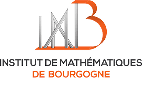
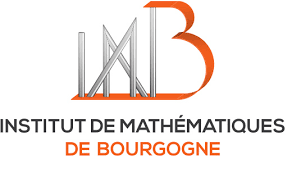
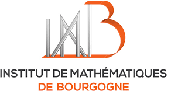
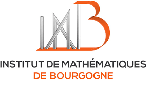

We gratefully acknowledge support from:
ANR FIBALGA
Institut de Mathématiques de Bourgogne
Swiss Academy of Sciences
Swiss mathematical society
University of Basel


 

10 - 14 January 2022, in Charmey
(near Gruyères, Fribourg, Switzerland)
|
John C. Ottem (University of Oslo) |
Specialization techniques and stable rationality |
|
Arthur-César Le Bras (Université Paris 13) |
Condensed mathematics (after Clausen-Scholze) |
|
Anne Moreau (Université Paris Saclay) |
Introduction to motivic integration, applications to birational geometry |
|
Monday January 10 |
Tuesday January 11 |
Wednesday January 12 |
Thursday January 13 |
Friday January 14 |
| 12h30 welcome |
breakfast 8h45-9h45 tmini-course 1 10h15-11h15 mini-course 2 11h45-12h45 mini-course 3 |
breakfast 8h45-9h45 mini-course 1 10h15-11h15 mini-course 2 11h45-12h45 mini-course 3 |
breakfast 8h45-9h45 mini-course 1 10h15-11h15 mini-course 2 11h45-12h45 mini-course 3 |
breakfast 8h45-9h45 mini-course 1 10h-11h mini-course 2 11h15-12h15 mini-course 3 |
| lunch | lunch | lunch | lunch | bus at 12h42 |
|
14h30-15h30 mini-course 1 16h00-17h00 mini-course 2 17h30-18h30 mini-course 3 19h dinner |
time for discussion / enjoying the mountain side 17h20-18h10 Skauli 18h30-19h20 Heuberger 19h30 dinner |
time for discussion / enjoying the mountain side 18h15 dinner 19h30-20h20 Gachet 20h35-21h25 Carvajal Rojas |
time for discussion / enjoying the mountain side 17h20-18h10 Urech 18h30-19h20 Campesato 19h30 dinner |
VIVA GRUYERE Charmey, Rte des Arses 4, 1637 Charmey
The journey to Charmey is 2h10 from Geneva, 2h30 from Basel/Zürich, 1h30 from Lausanne.
See timetables on www.cff.ch, the bus stop is "Charmey (Gruyère), Le Chêne". The place is very close to the bus stop.
Here is a hike map for the area.
|
| |
|
I will give an introduction to recent work joint with Johannes Nicaise on the stable irrationality of hypersurfaces and complete intersections. Some themes of the lectures include: the Grothendieck ring of varieties, the Larsen--Lunts theorem, Voisin's decomposition of the diagonal technique, unramified cohomology, the work of Hassett--Pirutka--Tschinkel, Nicaise--Shinder's work on specialization of (stable) rationality, and tropical degeneration techniques. I will also present applications to stable irrationality of several new classes of complete intersections (quartic 5-folds, (2,3)-complete intersections, Fano fibrations, ...). -- You may find the notes of the course Specialization techniques and stable rationality here -- | |
|
| |
|
I will give an introduction to the formalism of condensed
mathematics recently developed by Dustin Clausen and Peter Scholze, and
explain some of its applications. -- You may find the notes of the course Condensed mathematics here -- | |
|
| |
|
In this lecture, I will provide an elementary introduction to the theory of arc spaces and motivic integration.
I will first present well-known applications, such as Kontsecivh’s theorem that birationally equivalent complex Calabi-Yau varieties have the same Hodge numbers.
Then I will present applications to the singularities of G-varieties, for G a reductive group, and other topics.
| |
|
| |
|
This talk is devoted to the construction of a motivic measure on the space of real analytic arcs on a real algebraic set.
Since real algebraic geometry is quite different from complex algebraic geometry as there is, for example, no Nullstellensatz or Chevalley’s theorem, the classical construction of the motivic measure does not work as is for real algebraic sets.
The main part of the talk will focus on how to get around these issues. Then, if time permits, I will state two applications of this real motivic measure about blow-Nash maps and Lipschitz maps.
(joint work with T. Fukui, K. Kurdyka, A. Parusiński)
| |
|
| |
|
Projective spaces are the only projective varieties with ample (locally free) tangent sheaf. This statement was originally known as Hartshorne's conjecture and proved by Mori in his seminal paper "Projective manifolds with ample tangent bundles." By the jacobian criterion, a d-dimensional variety is smooth iff its tangent sheaf is locally free of rank d. In positive characteristic p>0, the jacobian criterion has a Frobenius-theoretic analog, namely Kunz's theorem: a d-dimensional variety is smooth iff the kernel of its Frobenius-trace morphism is locally free of rank p^d-1. It is then natural to ask for a Frobenius-theoretic analog of Mori--Hartshorne's characterization of projective spaces, namely, are projective spaces in positive characteristics the only projective varieties with ample (locally free) Frobenius-trace kernel? I'll discuss answers to this question in my talk. This is joint work with Zsolt Patakfalvi (EPFL).
| |
|
| |
|
Let G be a group acting freely in codimension 1 on an abelian
variety A. Terminalizations (and, if any, crepant resolutions) of the
singular quotient A/G are K-trivial varieties which, depending on A and
G, may have various types of Beauville-Bogomolov decomposition. In
particular, they may be symplectic or not, simply-connected or not...
Assuming that G acts freely in codimension 2 is rather simpler in this
regard, and yet illustrated by at least two examples, due to K. Oguiso.
In this talk, I will recall K. Oguiso's classification for such
Calabi-Yau threefolds, explain the classification in dimension 4, and
present partial results toward the classification in arbitrary dimension.
| |
|
| |
|
I will discuss a method that builds terminal Q-factorial Fano (or Q-Fano for short) varieties, called Laurent inversion. This uses the Fano/Landau-Ginzburg correspondence -- informally this can be thought of as "mirror symmetry for Fano varieties" -- to connect toric objects to (relatively smooth) Fano varieties. Laurent inversion, developed by Coates, Kasprzyk and Prince, is a specific way to move between the two using toric embeddings. I will apply this to the Q-Fano case, after discussing a surface example.
| |
|
| |
|
A major question in birational geometry is determining the relation between various rationality properties, such as stable rationality, retract rationality and unirationality. Nicaise and Ottem have shown that the very general intersection of a quadric and a cubic fivefold is not stably rational using specialization and motivic integration. In this talk, we apply a specialization method based on the decomposition of the diagonal to study the retract rationality of these complete intersections. Using a specialization to positive characteristic, we prove that a very general complete intersection of a quadric and a cubic fivefold is not retract rational, which is a stronger property than being not stably rational. In fact, as a step along the way, we find an explicit example of such a complete intersection, defined over the rational numbers, which is not retract rational and therefore also not stably rational.
| |
|
| |
|
tba
| |
Registration is closed.
Marc Abboud (Rennes)
Ahmed Abouelsaad (Basel)
Jefferson Baudin (EPFL)
Fabio Bernasconi (EPFL)
Anna Bot (Basel)
Jean-Baptiste Campesato (Angers)
Javier Carvajal-Rojas (EPFL)
Gabriel Dill (Oxford)
Marta Djuella (Basel)
Victor do Valle Pretti (Uni Camp)
Adrien Dubouloz (Dijon)
Mani Esna-Ashari (Basel)
Erroxe Etxabarri-Alberdi (Loughborough)
Enrica Floris (Poitiers)
Pascal Fong (Basel)
Cécile Gachet (Nice)
Pierre-Alexandre Gillard (Dijon)
Ouenïs Gloton (Dijon)
Isac Hedén (Upsala)
Jordi Hernandez (Toulouse)
Liana Heuberger (Angers)
Frédéric Mangolte (Angers/Marseille)
Irène Meunier (Toulouse/Angers)
Anne Moreau (Orsay)
Lucy Moser-Jauslin (Dijon)
Alan Muniz (Dijon)
John C. Ottem (Oslo)
Quentin Posva (EPFL)
Linus Erik Rösler (EPFL)
Gerold Schefer (Basel)
Julia Schneider (Toulouse)
Bjørn Skauli (Oslo)
Ronan Terpereau (Dijon)
Christian Urech (EPFL)
Sokratis Zikas (Basel)
Susanna Zimmermann (Angers)
Philipp Habegger (University of Basel)
Ronan Terpereau (University of Burgundy)
Susanna Zimmermann (University of Angers)
Logistic support: Adrien Dubouloz (University of Burgundy)
Here are the previous ones:
1st, 2nd , 3rd, 4th, 5th, 6th, 7th, 8th 9th 10th swiss-french workshop in Algebraic Geometry
We gratefully acknowledge support from:
ANR FIBALGA
Institut de Mathématiques de Bourgogne
Swiss Academy of Sciences
Swiss mathematical society
University of Basel


 
